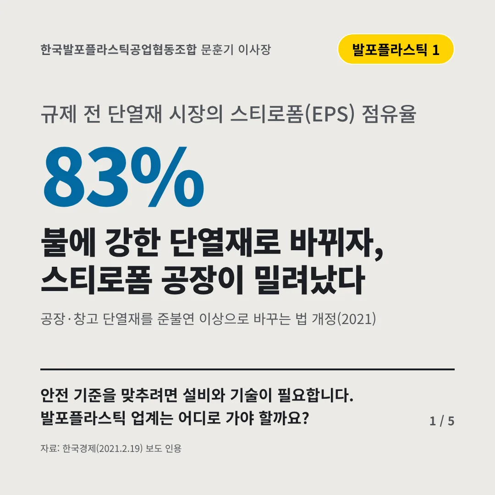
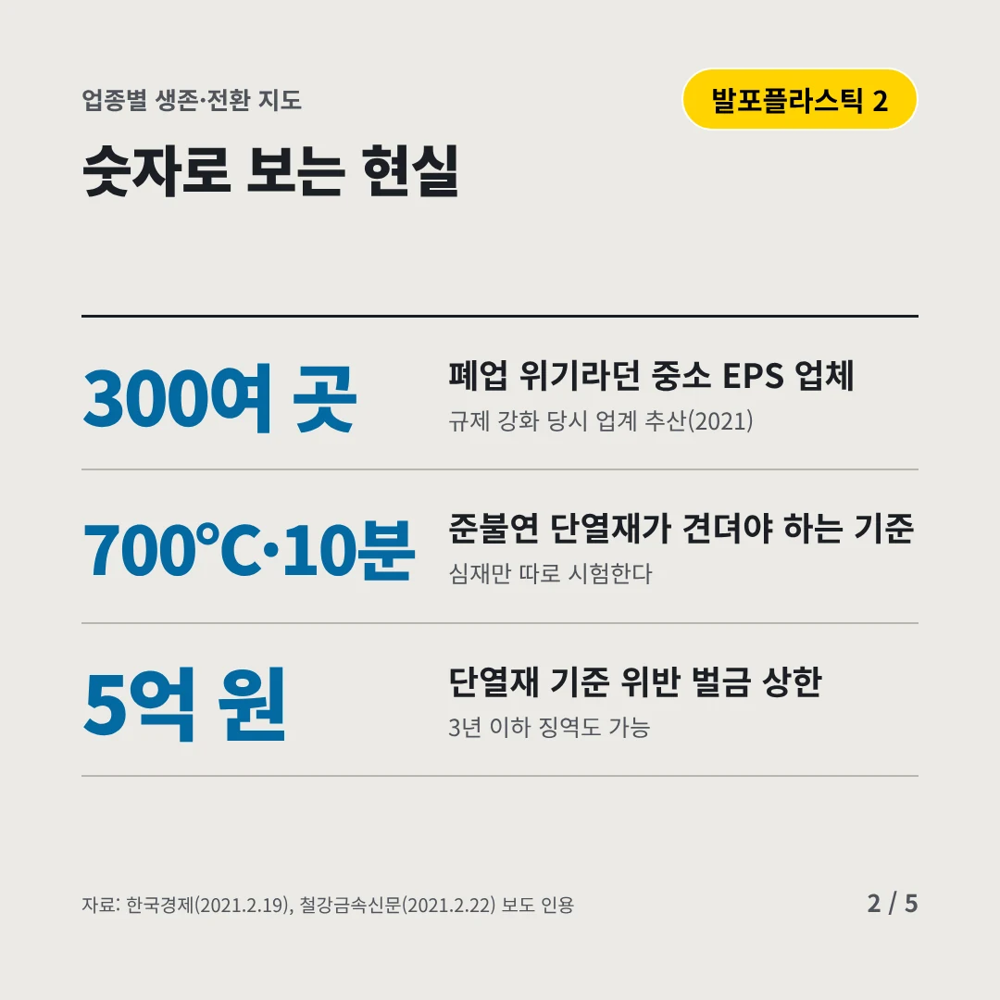
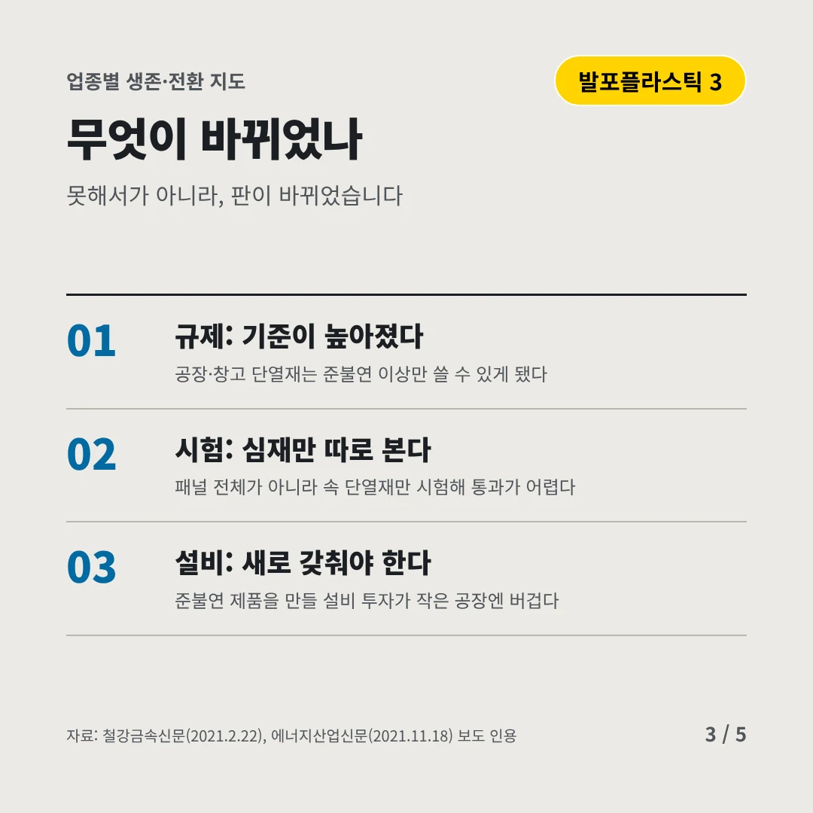
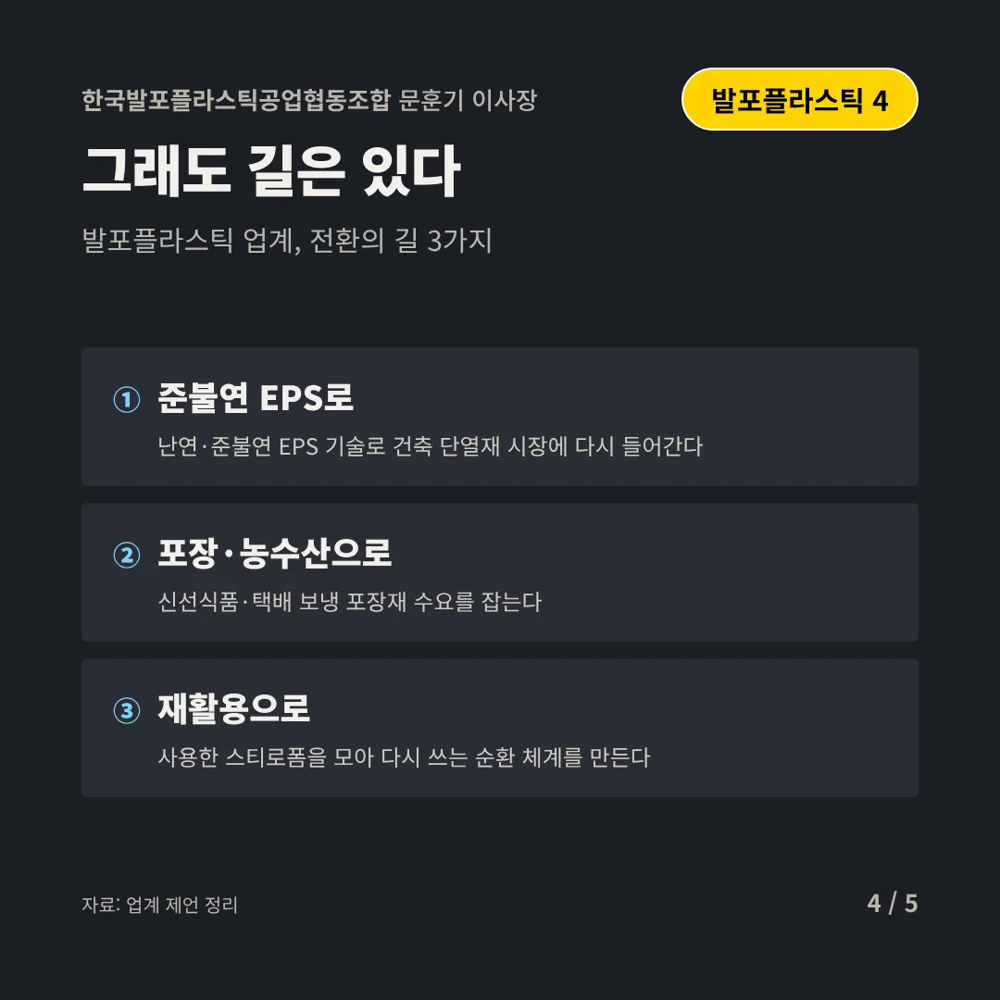
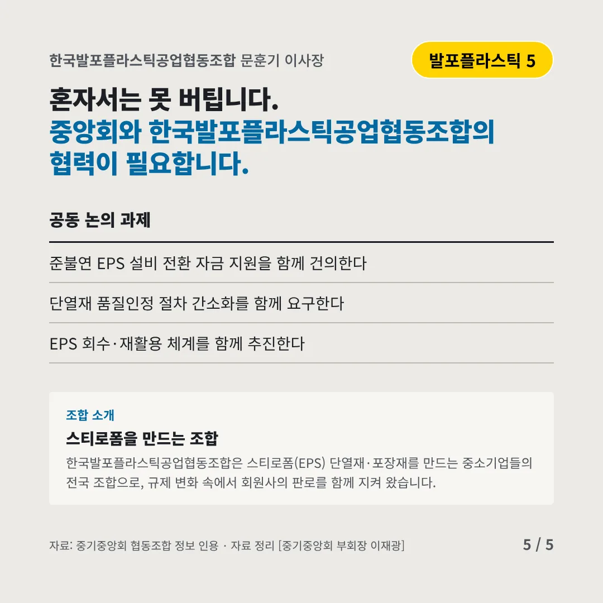
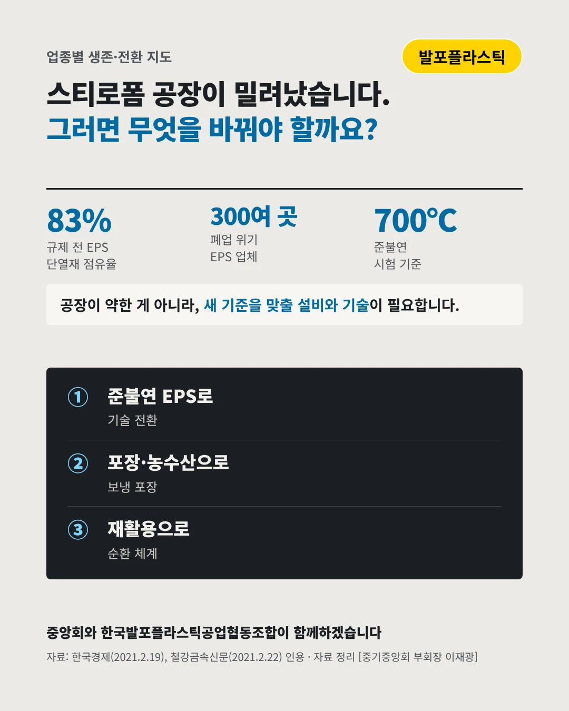

한국발포플라스틱공업협동조합문훈기 이사장
불에 강한 단열재로 바뀌자, 스티로폼 공장이 밀려났다
83% 규제 전 단열재 시장의 스티로폼(EPS) 점유율






안전 기준을 맞추려면 설비와 기술이 필요합니다. 발포플라스틱 업계는 어디로 가야 할까요?
숫자로 보는 현실
- 300여 곳폐업 위기라던 중소 EPS 업체규제 강화 당시 업계 추산(2021)
- 700℃·10분준불연 단열재가 견뎌야 하는 기준심재만 따로 시험한다
- 5억 원단열재 기준 위반 벌금 상한3년 이하 징역도 가능
무엇이 바뀌었나
- 규제: 기준이 높아졌다공장·창고 단열재는 준불연 이상만 쓸 수 있게 됐다
- 시험: 심재만 따로 본다패널 전체가 아니라 속 단열재만 시험해 통과가 어렵다
- 설비: 새로 갖춰야 한다준불연 제품을 만들 설비 투자가 작은 공장엔 버겁다
그래도 길은 있다
- 준불연 EPS로난연·준불연 EPS 기술로 건축 단열재 시장에 다시 들어간다
- 포장·농수산으로신선식품·택배 보냉 포장재 수요를 잡는다
- 재활용으로사용한 스티로폼을 모아 다시 쓰는 순환 체계를 만든다
한 장 요약

조합 소개
한국발포플라스틱공업협동조합은 스티로폼(EPS) 단열재·포장재를 만드는 중소기업들의 전국 조합으로, 규제 변화 속에서 회원사의 판로를 함께 지켜 왔습니다.
자료: 한국경제(2021.2.19), 철강금속신문(2021.2.22), 에너지산업신문(2021.11.18)